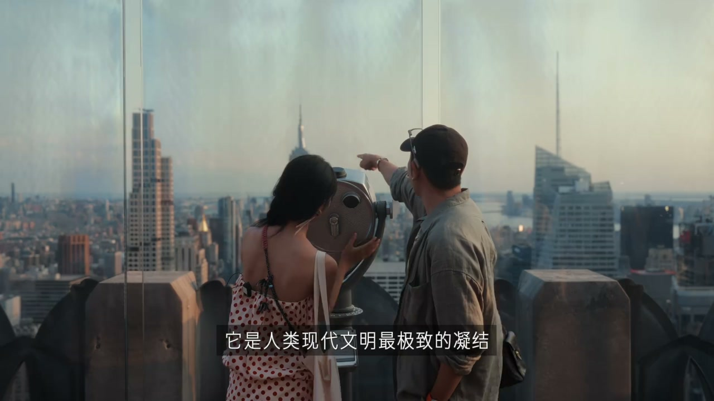
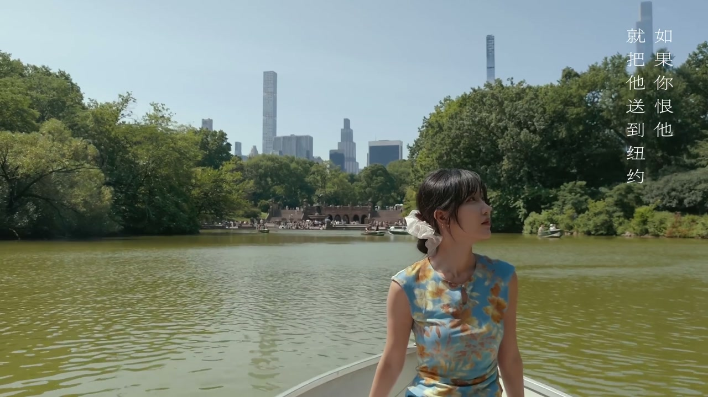
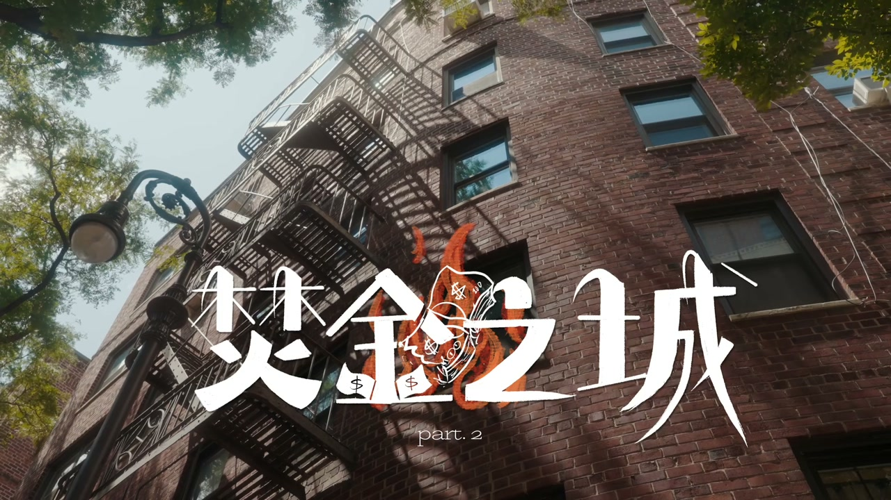
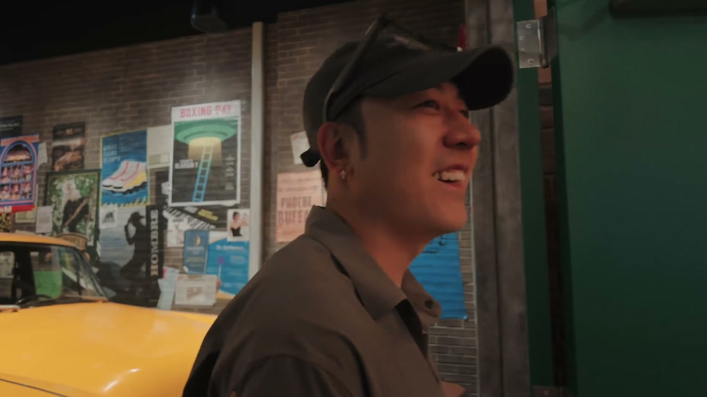
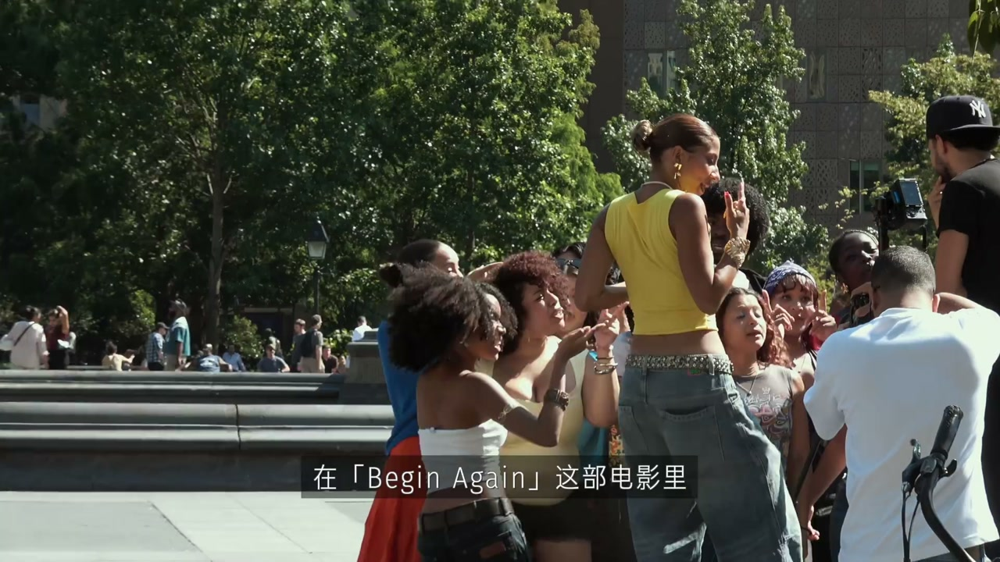

世界上只有两种城市：纽约和纽约以外
00:00然后你看到那个位置了吗？《Begin Again》我超喜欢，这部电影是我们两个这辈子看过的第一部电影。
00:20有人说这个世界上只有两种城市：纽约和纽约以外的地方。纽约像一座被压缩过的地球——金钱、权力、艺术、罪恶、梦想，所有能在人间燃烧的东西，都在这个面积不足60平方公里的曼哈顿岛上日夜燃烧。
00:50有人在这里一夜成名，有人在这里一贫如洗。更多的人则是带着行李箱和一颗不甘的心，站在某个街角，抬头看着被摩天大楼切割成碎片的天空。在这里你会觉得自己无比渺小，也会觉得自己无所不能。
01:10而这一次，我们带着一张价值8万元的世界杯门票，飞越了整个太平洋，去亲眼见证这座城市的终极浪漫——世界杯决赛。因为没有哪一座城市比纽约更懂得：来自不同国家、说着不同语言、相信不同故事的人，为什么仍然愿意坐在一起，看着同一件事情发生。欢迎来到美国往事，纽约，第一集。

飞涨的世界杯球票
01:40现在距离2026年世界杯决赛还有不到48个小时。我们那张B站给的价值7380刀的票，现在已经涨到最低12000刀一张，而且现在还在涨。说实话球票是可以买卖的，也就是说我们现在可以卖了。
02:10这次我们将会带什么去拍摄我们的球赛？真的，这个东西有点意思，我一直藏着。
02:30你看过这个电视剧吗？叫《北京人在纽约》。你听过那个歌吗？刘欢唱的：'千万次千万里我追寻着你，你在哪里……'（Time and time again you ask me）'如果你爱他，就送他来纽约，因为那里是天堂；如果你恨他，就送他来纽约，因为那里是地狱。'

把纽约想象成北京：上城下城
03:00我们现在的位置当然是在曼哈顿。纽约其实有五大行政区，曼哈顿其实只是其中一个。曼哈顿还分为上城区、下城区。如果大家不好理解，咱们就把纽约想象成北京——因为其实纽约跟北京是有相像的地方。
03:30美国人它不分东南西北，它的上下是在看地图的时候它在上下。Uptown基本上就是上风上水的地方，相当于北京的北城。下城区就是Downtown，一听Downtown这个名大家就熟了吧，相当于北京的南城。Downtown就是很多最早最早的发源地——唐人街、小意大利、华尔街等等，基本上都集中在Downtown的地方。
04:00以中央公园为分界线，很多富人区都集中在北城。当然纽约和北京的相像不仅于此：同样的四季分明，同样的机会多、竞争多、房价高、通勤长。北京人抱怨堵车，纽约人抱怨地铁。
04:20很多像我这么大的中国人认识纽约，是从《北京人在纽约》那部剧开始的。三十多年过去了，北京和纽约依然很像——都是那种你可以不喜欢，但是你无法忽视的城市。
- 曼哈顿是纽约五区之一，60平方公里承载一切
- Uptown=上风上水≈北京北城；Downtown≈北京南城
- 中央公园为分界线，富人区集中在北城
- 北京人抱怨堵车，纽约人抱怨地铁
Katz's Deli：百年烟熏牛肉三明治
05:00我们是在奥兰多认识的（Jeff），但在这之前他就住在纽约的寄宿家庭中上高中，所以这次过来他也给我推荐了不少的美食。我们选择要介绍给大家的这一家，跟北京的口味也有点像——纽约也有属于自己的烧饼夹肉。
05:20我们现在排了大概得有40分钟了吧，马上就排到了。朋友们，终于点到了，一个多小时。然后这家店其实是1888年一直开业到现在，100多年了，是全美历史上最早的一家Deli。
05:40Deli可以理解为三明治的意思，就是烟熏牛肉三明治，里边配的是哈尼（Honey Mustard？）的酱。有点像驴肉火烧，冲到我脑壳上的那个烟熏味。大家看到的所有的肉，它为什么排队这么久？所有东西都是现给你切，它外边的肉都不要，直接就切掉了，它只用里边最嫩的肉。全部都是手工腌制，每一块肉都是要腌制30天以上。
06:30就在我身后，周杰伦的照片就在那。然后它底下就一个教学：如果你吃噎着的话怎么急救。每一个告示都不简单。这样一盘的价格大概是30多，加上要点个水点个饮料再加上税费，可能要冲过50刀了。但是在曼哈顿，这也就代表了纽约的一个物价水平。

逃生梯：穷人阳台
07:00纽约很多这样的楼梯，就是在楼外的楼梯，跟看美剧店里有的那样。后来我才知道，这个叫防火逃生梯。因为19世纪的时候纽约有各种大火，政府就出了一个法案：如果你是盖这种高层的公寓，你必须得有这玩意。
07:30特别是在曼哈顿寸土寸金的地方，一般是没有阳台的，所以像这种防火梯就慢慢地变成了一种'穷人阳台'。最早的奥黛丽·赫本演的那个《蒂凡尼的早餐》，她就在这个上边唱的那个《Moon River》。六人行就更不用说了，太多的故事发生在逃生梯上了。
08:00从这个逃生梯你就能看出来，纽约特别是曼哈顿真的是寸土寸金的地方。有一个公寓能看到整个中央公园的，它卖到了6000还是7000万美元，6、7万（？）……42大平层，4亿人民币，这就是纽约的物价。
纽约物价：世界之巅的价格
08:30纽约的物价平均要比全美的平均物价高出74%。平均房租是4950美元，将近3万人民币的房租，是全美平均房租的三倍多。
08:50我看过一个报告：一个单身人士如果生活在纽约，让他生活感觉到舒适的年收入门槛——5万8300美元。如果你一年赚不到年薪56万人民币，你在纽约很难活得说都不说滋润了，就是很难活得舒服。
09:10另外纽约的小费文化越来越离谱了，最近几年付款机上的小费很多都是18甚至20起跳。我们在时代广场的酒吧，各种苛捐杂税加起来70多块钱的消费可以瞬间到100多。
09:30我们龙虾店一共是买了一个龙虾三明治、三个像是海鲜式的东西、一盒虾、一个雪蟹腿，加一起150多刀，1000多人民币。一碗担担面16刀，这碗担担面120吧？我们大家分着吃吧。分着吃它也是110、120。我吃生肉了。
10:00纽约从你落地的第一分钟起，就在彬彬有礼地提醒你：欢迎来到世界之巅，但是也请支付世界之巅的价格。
- 物价：比全美平均高74%，房租4950美元/月≈全美3倍
- 舒适门槛：年薪5.83万美元（≈56万人民币）
- 小费文化：18%-20%起跳
- 龙虾三明治+海鲜150刀+，担担面16刀
老友记体验馆：我差点掉眼泪
10:30但如果你要问我这次花的最值得的一笔钱，则一定是老友记的体验馆。今天有点天气之子，纽约下了很大的雨。当然我也有下了雨以后的备案，比如大都会博物馆、自然科学博物馆，但是这两个地我之前都去过。
11:00我想去一个我没去过的，是 Friends（老友记/六人行）的一个体验馆。老友记是我最喜欢的剧，没有之一。真的，郭老师真的很爱这个剧。
11:30因为下雨这个行程很临时，我没有做太多的攻略。进来以后就是一些简单的陈设，然后我也完全不知道这扇门背后是什么。直到它打开以后，我看到了那张熟悉的橘色沙发——哇，给你拍一下，小鸡皮疙瘩。哇塞，可以在那拍照是吗？对。哦，眼泪快出来了。
12:00我感觉刚刚那个门打开，就像你在那个（咖啡馆）。这是我看的，欢迎来到真正的世界。这是真实的世界。你会喜欢的，罗老师要流泪，我都有点感动，因为我是看过的，逼着你看的。
12:30这一位真的是我的最网友，我和他在一起。还有这个 Smelly Cat，这个我知道。看看我，我是 Chandler，他这个真是1:1还原。这边是 Monica 的客厅，这边是这个门，然后这边就到楼道了。然后这里还是当时 Rachel 他们掉地上那个蛋糕，然后他们就在这儿吃掉的。
13:00我们刚搬家的时候因为这个楼梯也特别窄，你搬沙发也这个（难）。这刚好是红队跟蓝队——西班牙队、阿根廷队。这边是菲比的出租车，菲比他奶奶留给他的出租车。
13:20我过来了，这边就是他们咖啡厅了。来我看一下——你别说你了，我（也）一进来我都差点掉眼泪。我其实没有把老友记看完，就是莫哥带着我只看了几集。但是我刚刚一进来，然后看到身后这个咖啡厅的时候，我真的我有点想哭的感觉。
13:50咱们别老哭，每一集不是你哭就我哭。但是这个点特别好：大家看到我们现在面对的这个地方，它把他们六个人经常在一起聚会的这个沙发单独圈起来了，但是外边是真的咖啡厅——也就是说外边来来往往的大家会真的过来坐、休息、点咖啡，单独把这个沙发圈起来让我过来照相。
14:20就让我真的刚刚一走进来，感觉是主角的感觉。然后你就有种感觉你在片场，这些人都是NPC，而且特别的自然，因为大家真的是真的过来喝咖啡的人。你知道我刚一进来的时候真的很震撼。我第一反应就是：但是在做咖啡的人不是那个 Gunther 跟 Rachel 了，那个 Gunther 的演员已经死掉了。
15:00影迷真的很值得一来。多少钱？65刀一个人。65刀一个人，稍微有点贵，四五百（人民币）呢。

荣耀RoboPhone：手机里长出了WALL-E
15:30我最早拿到这个荣耀 RoboPhone（Robot Phone），第一反应就是像是手机跟云台。然后有一天晚上喝多了，然后犯下了一个错误诞生出来的东西。但是真的在这两天的使用下来，我个人会觉得拍照只是它的一个部分，而是说在手机上长出了一个 WALL-E。
16:00比如说它就可以听我们在说什么，然后它可以给予反馈。嘿，悠悠，点评一下我们两个的OOTD——'你的穿搭很有亮点，左边的人穿着带有精致花纹的绣服饰，气质温暖；右边的人戴了帽子，穿着简单的上衣，整体风格休闲自在。'
16:30之前的手机里面是有AI的嘛，但是很少有这种真的交互感。这个东西是第一个让我真的觉得有一个小机器人在跟我交互的感觉。
17:00悠悠，你觉得西班牙跟阿根廷队哪个队有可能会获胜，帮我预测一下，因为我一会儿要去买球衣。'西班牙夺冠概率略高，不过阿根廷的韧性和梅西的个人能力也可能创造奇迹。你可以根据自己的偏好选择能支持的球队球衣。'
中央公园：曼哈顿最贵的锚点
17:30在曼哈顿一套平层可以卖到几亿人民币。当然在这里，一套房子的价值常常不只是钢筋水泥和面积——能否俯瞰到中央公园、能否到达一个可以看见日落的高度，才是这里价格最重要的锚点。
18:00好了朋友们，我们现在来到的就是大名鼎鼎的中央公园。刚刚一进来就有好多马车，因为他们一看我们就是游客，不是来这边跑步或者遛狗的人。
18:30中央公园的面积如果大家看地图就会发现在寸土寸金的曼哈顿，一个公园竟然可以占到这么大。之所以曼哈顿的房价会如此之高，也是拜中央公园所赐。一方面整个中央公园如果都拿来盖楼，可能曼哈顿的房子就会（便宜）了。
19:00北京在中间最值钱的地方也有一个朝阳公园，朝阳公园的房价也是最贵的。刚开始只拨了150万美元去修这个房子，等到1876年它最终中央公园开放的时候，整个的成本已经到达了1000多万美元——这不就跟我们装修一样吗？要不干票大的不行就干票大的，弄多大的不行就弄个中式的、欧式的就行。原来政府装修也这样。
19:40我们现在要去的地方叫做绵羊草坪——有很多绵羊，可能当年在修这个公园前会有很多绵羊在吃草。好漂亮。阿根廷，看看，到了，有人把阿根廷的国旗放那了。现在草坪上面什么人都有，我还看到有小姐姐穿着泳衣在晒太阳。这一幕相信大家在很多的电视剧电影里面都看过了，这里就是中央公园的绵羊草坪。

RoboPhone使用体验：阿莱电影模式
20:30我现在已经使用这台荣耀 RoboPhone 大概有两三天的时间了，整体的感受还是不错的。首先第一点就是从外观上你会觉得它真的很拉风，老外一直在问我在哪儿能够买到，因为好几个老外都问我同样的问题了。
21:00如大家所见它是一个可以折叠的云台，也就是说你不用它的时候你可以收回去。我感觉60%左右的使用场景我还是不会把它拉出来的，我就相当于直接盖一拉出来我就这么拍了，就跟我在使用普通的手机一样，它很轻。
21:30当你把它展开的时候，它就是一个小型的三轴云台，整个的使用场景其实是跟大家平时用的口袋云台、手机云台是差不太多的。它上面伸出来的摄像头就像一个WALL-E一样，也可以实现比如说对脸部的追踪等等。在你自拍的时候，或者说当你有一个手机支架把它放在那的时候，它都能根据人物去追踪。
22:00当然这里还有一个我这两天使用最多的模式——阿莱电影模式。它会给你一条 LogC3 的曲线，也就是阿莱的曲线，它有14档的动态范围、10比特的宽容度，宽容度还是不错的。
22:30阿莱的 LogC3 的特点其实就是肤色，基本上国内90%以上的 TVC 跟电视剧、包括你们在拍的电视剧都是阿莱的，为什么？就是因为它的肤色特别好，它不费调色。
23:00这次荣耀 RoboPhone 搭载的是骁龙旗舰芯片，因为这颗芯片支持在没有网的时候去做一些本地的运算，所以在高强度的拍摄跟使用中会表现得非常稳定，也可以让悠悠随时响应你的需求。
23:30你看就是出海的机器人，你看这边是他操控他的，两个人都是中国人，硬气。然后老外都在这儿疯了，都没见过都没看过。
- 外观拉风，多个老外追问在哪买
- 可折叠云台：60%场景当普通手机用，展开=三轴云台
- 摄像头像WALL-E，支持脸部追踪
- 阿莱电影模式：LogC3曲线+14档动态范围+10bit宽容度
- 阿莱肤色好，国内90%以上TVC/电视剧在用
- 骁龙旗舰芯片，无网本地运算，悠悠随时响应
《Begin Again》：城市把杂音变成音乐
24:00这儿的很多电影也是在这儿取景的。然后你看到那个位置了吗？《Begin Again》我超喜欢的电影，是我们两个这辈子看过的第一部电影。记得吗？再次出发，一个音乐电影。看到我快睡着了。
24:30当时约会的时候说要不要去我家看电影，然后我就想这个男孩怎么这么文艺。陆老师说：来我家里看电影吧。我说他这个是不是有什么企图？然后他是真的就在看电影。
25:00转过来是这座城市电影感最浓烈的容器，所以它太适合被拍进电影。因为纽约的电影从来不只是在拍纽约，它是在拍一个人如何在巨大的城市里偶然得到了一段属于自己的时刻。
25:30他说他是真爱电影。我说也不拉个小手？他真的就坐在旁边很认真很认真地（看）。你是不是睡着了？当时那部电影我真的很困很困。但你知道当我想把一个很好的电影推荐给你一个人的时候，然后我看到你在玩手机，我就暂停了，我就说：这儿你不能错过。
26:00在《Begin Again》这部电影里，他们在纽约的街头、天台、公园录歌。他们没有昂贵的录音棚、没有能够保证成功的未来，但他们把城市的杂音——风声、地铁声、脚步声，全部都变成了音乐的一部分。
26:30后来我才明白，纽约真正迷人的地方也许就在这里：它不会承诺你成功，它只会给你一个足够大的舞台，让你带着自己的不甘心、热爱和一点点天真，继续往前走。
27:00其中有一首歌就在我们面前这个喷泉的对面，他们在船上，我不知道你记不记得，他们在船上的时候就在这儿录的，还挺奇妙的。在一起的第七年，我现在做到了。我们七年前看的第一部电影，是真的，然后我们变成了电影里的人。虽然你没好好看那部电影。他们在求婚。恭喜你快离开（结婚了）？米老师、秋亚，结婚？你可真是又疯又笑。
世界杯决赛：22个人为了一颗球奔跑
27:30你现在有几点的球赛？三点，来不及了。三点，现在十一点多了，你现在过去一小时还得停（车）。球赛在新泽西，玩得太嗨了差点把正事忘了。
28:00纽约把一切都标上了价格：房子、景观、时间，世界杯也不例外。足球还是足球，可当全世界最昂贵的城市遇上了全世界最大的比赛，热爱、情怀也都有了清晰的价码。而纽约恰好就是最懂得如何让梦想、热爱与金钱同时运转的地方。
28:30Cuz it's that time，Let's play football！天呐天呐，氛围就是这么个氛围，希望大家能够感受到。至于为什么穿阿根廷的球衣，单纯是因为这是唯一一件可以买得到的。我要不要买个西班牙的帽子，这样就是极限端水。
29:00我累了，No more. All sold out right？Yeah, today. 我不是太懂足球，我这个篮球迷，所以到了赛场我也只能靠话语来预测一下比分。我感觉吧，今天得90分钟是一个平局。
29:30开球了，朋友们！观众朋友们大家好，北京电视台，欢迎大家收看今天的世界杯决赛，对阵的双方是阿根廷和西班牙。守门员吹响了本场比赛开始的哨音。这场比赛的最大赢家是巴萨，因为梅西是巴萨出来的。另一边西班牙这边有个制作公司加马尔是巴萨的比较多，所以它们很难打起来，因为其实他们很熟，都是队友。
30:00全场阿根廷现在都没有角射门，然后阿根廷的这个门将真的是很无敌，他叫什么？马丁内斯，马丁内斯。西班牙这边的门将就基本上都没（事）……他这个无敌守门员受伤了，没事，起来了。
30:30发生什么了？下半场加时赛的下半场，我都不知道开球了，突然就进了。其实足球赛的本质，或许就是人类发明的一种文明的战争——22个人为了一颗球奔跑、对抗、争夺，所有的野心、暴力、愤怒、荣誉、不甘，都可以被锁进90分钟和17条规则里。
31:00对于一个非球迷来说，这次世界杯最让我在意的并不是谁夺冠，而是伊朗队曾经顺利地抵达美国赛场。当战争让许多对话都失去了出口，足球却依然被它留下了一块草坪。只要这场球还能踢完，文明就还有底线；只要那颗球还在草地上滚动，人类就还愿意把冲突交给规则，而不是交给彼此。
31:30当然，足球并没有弥合伤痕，也没有消除分歧，但它让原本不同的人愿意来到这里，坐在一起看着同一件事情发生——这本身就是一个奇迹。
32:00比赛结束后的那个夜晚，纽约的夜色被（灯火）照得透亮。时代广场的电子屏永不熄灯。西班牙的球迷突然就多了起来。这座城市没有因为一场世界杯决赛而改变什么，它见过了太多的伟大与渺小、太多的加冕与告别。
32:30我们带着荣耀 RoboPhone 穿行在这里，它用稳定的镜头跟住了奔跑的人，用会转动的视角捕捉了城市突然出现的情绪。技术正在让镜头更像人，但它替代不了的，始终是我们为什么记录。纽约不会记住我，但它会永远留在我的镜头里。
下一期：美国往事
33:00我觉得纽约之所以会变成纽约现在的样子，这个可能要放到我们的下一期去讲。大家知道我们这档节目叫做美国往事。有一部电影也叫做美国往事。
33:20下一期里边我们将会给大家承接我们之前西西里岛的故事——那些离开了西西里岛的意大利人，他们最终去了哪。我觉得你挺厉害的，之前我们在做黑手党那个（系列）的时候，陆老师就在节目里面给自己挖了个坑，我说这坑什么时候埋啊，这么快就填上了。
33:40好了，记得给我们个一键三连，记得持续关注我们。我们下期美国往事再见！